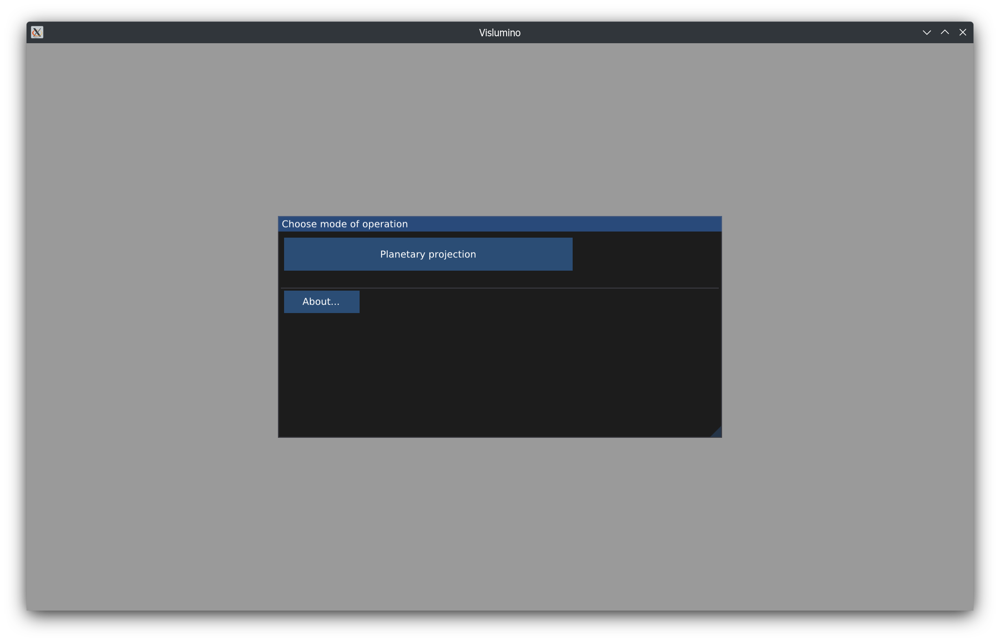
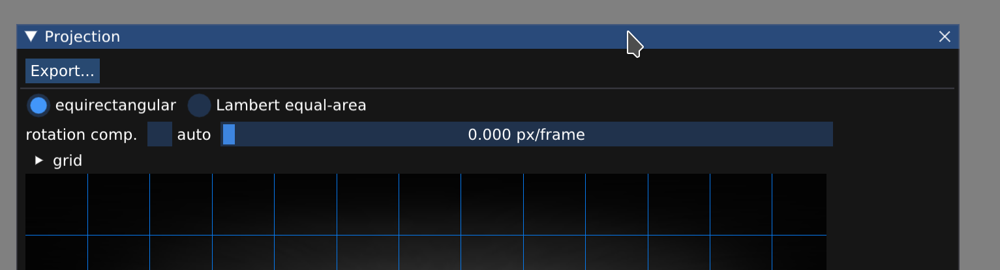

This work is licensed under a Creative Commons Attribution 4.0 International License.

In this mode Vislumino generates cylindrical (equirectangular or Lambert equal-area) and orthographic projection of planetary surface based on astrophotographs — especially rotation time lapses.
After choosing the Planetary projection mode, use File/Load images... to load a sequence of one or more images (typically: processed stacks).
Vislumino requires all images in the sequence to have the same dimensions and pixel format. The planetary disk must be located at the same position and have the same orientation. For the rotation compensation function to work correctly (see below), the time intervals between images must be equal.
The Source images window allows reviewing of the loaded images and setting their parameters:
Currently the planet inclination and the image roll (i.e., disk orientation) must be specified manually. It is easy to do so while looking at a cylindrical projection view, where a reference grid (note: this is not a latitude/longitude graticule) can be displayed:
The projection view can compensate for the planet rotation, keeping the features stationary between frames:
Clicking the auto checkbox calculates the compensation amount using the disk diameter, frame interval and rotation period specified in the Source images window:
Thanks to this feature any relative cloud band movement (as in the above video) is easier to spot.
By adjusting the compensation slider manually the user can choose to keep different features/objects stationary, e.g., a transiting Galilean moon:
Clicking Export... in the projection view allows saving of all projected frames in a selected output folder. A third-party tool of user's choice can be then used to create a projection animation:
Planetary disk detection performed by Vislumino is not always accurate. This can be tweaked in the Source images view. Note how in the below video the projected polar regions initially exhibit small distortion, which can be corrected by slightly decreasing the disk diameter:
Globe view shows an orthographic projection of the planet. The globe's orientation can be changed by mouse dragging with the left button pressed; the mouse wheel changes the zoom level.
Multiple projection views can be opened simultaneously; windows can be docked together, or at the main application window: